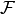
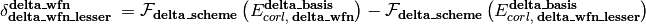
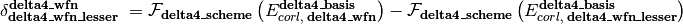
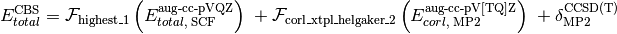
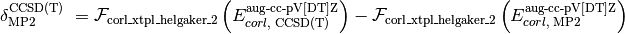

![E_{total}^{\text{CBS}} = \mathcal{F}_{\textbf{scf\_scheme}} \left(E_{total,\; \text{SCF}}^{\textbf{scf\_basis}}\right) \; + \mathcal{F}_{\textbf{corl\_scheme}} \left(E_{corl,\; \textbf{corl\_wfn}}^{\textbf{corl\_basis}}\right) \; + \delta_{\textbf{delta\_wfn\_lesser}}^{\textbf{delta\_wfn}} \; + \delta_{\textbf{delta2\_wfn\_lesser}}^{\textbf{delta2\_wfn}} \; + \delta_{\textbf{delta3\_wfn\_lesser}}^{\textbf{delta3\_wfn}} \; + \delta_{\textbf{delta4\_wfn\_lesser}}^{\textbf{delta4\_wfn}} \; + \delta_{\textbf{delta5\_wfn\_lesser}}^{\textbf{delta5\_wfn}}](_images/math/dc7ee176476c1c8c6385cb631ef6f6b64aae76e0.png)
Here,  is an energy or energy extrapolation scheme, and the following also hold.



A translation of this ungainly equation to example [5] below is as follows. In words, this is a double- and triple-zeta 2-point Helgaker-extrapolated CCSD(T) coupled-cluster correlation correction appended to a triple- and quadruple-zeta 2-point Helgaker-extrapolated MP2 correlation energy appended to a SCF/aug-cc-pVQZ reference energy.

